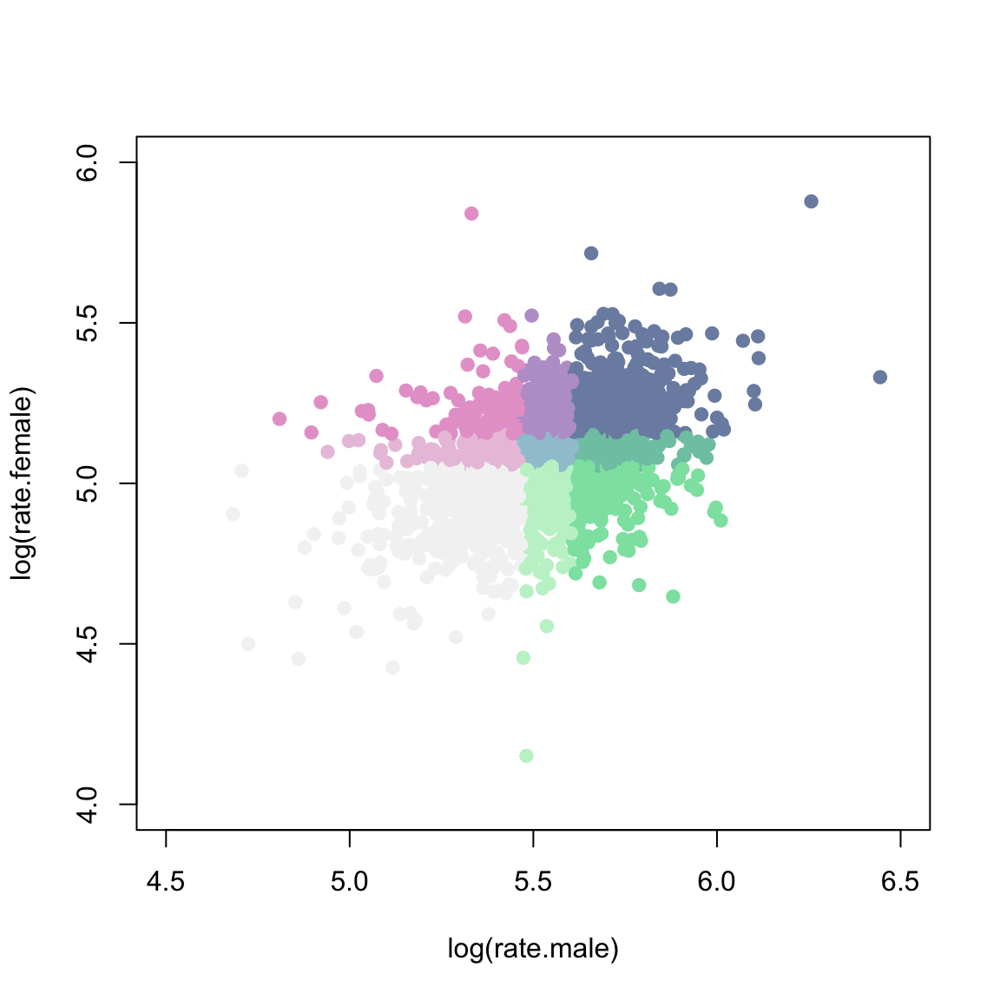
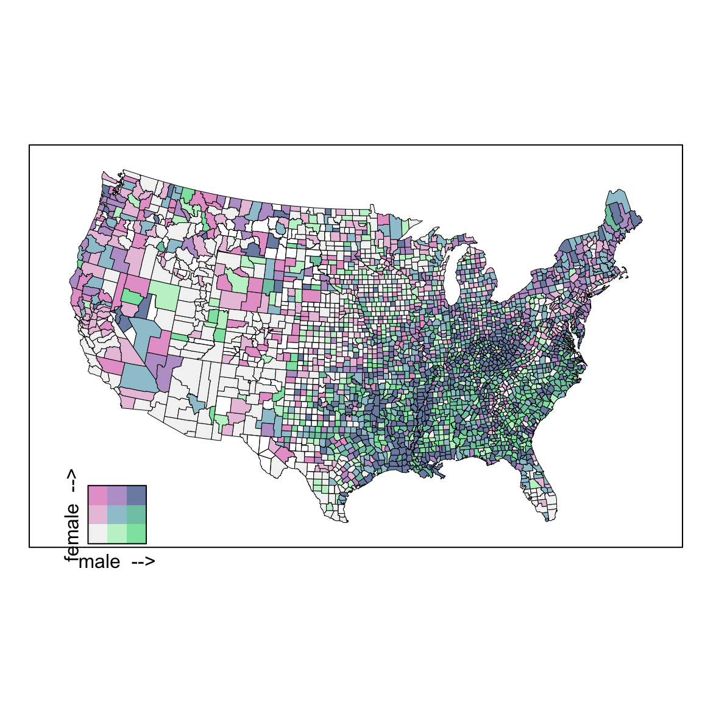

Analysis
Bivariate choropleth color
0.0.10 Bivariate color classes
Each variate is divided into thirds (based on percentiles) and a joint classification for all 9 combinations is defined.
library(classInt)
library("knitr")
knitr::opts_chunk$set(fig.align="center", fig.width=6, fig.height=6)
options(width=90)if(!require('latticeExtra')){
install.packages("latticeExtra", type = "source")
}
if(!require('pals')){
install.packages("pals", type = "source")
}require(latticeExtra) # USCancerRates, mapplot
require(maps) # map
require(classInt) # classIntervals, findCols
require(grid) # viewport, pushViewport
require(pals) # brewer.blues, stevens.pinkgreencols <- stevens.pinkgreen; nbins <- 3
# categorize rates into 3 percentile bins
brksm <- classIntervals(log(USCancerRates$rate.male), n=nbins, style='quantile')## Warning in classIntervals(log(USCancerRates$rate.male), n = nbins, style = "quantile"):
## var has missing values, omitted in finding classesbrksf <- classIntervals(log(USCancerRates$rate.female), n=nbins, style='quantile')## Warning in classIntervals(log(USCancerRates$rate.female), n = nbins, style = "quantile"):
## var has missing values, omitted in finding classesclassm <- findCols(brksm)
classf <- findCols(brksf)
# convert x,y classes into a joint class x+3(y-1)
USCancerRates$class2 <- classm + nbins*(classf-1)
# scatterplot of two variates showing bins
plot(log(rate.female) ~ log(rate.male), data=USCancerRates,
col=cols()[USCancerRates$class2], pch=19,
xlim=c(4.5, 6.5), ylim=c(4.0, 6))
0.0.11 Draw US cancer rate male vs female
m3 <- mapplot(rownames(USCancerRates) ~ class2, data = USCancerRates,
colramp=cols, breaks=seq(from=0.5, by=1, length=nbins*nbins+1),
xlab="",
colorkey=FALSE,
map = maps::map("county", plot = FALSE, fill = TRUE,
projection = "tetra"),
scales = list(draw = FALSE))
suppressWarnings(print( m3 ))
# add the color legend
m3leg <- levelplot(matrix(1:(nbins*nbins), nrow=nbins), axes=FALSE, col.regions=cols(),
xlab="male -->", ylab="female -->", cuts=8, colorkey=FALSE,
scales=list(draw=0))
vp <- viewport(x=.15, y=.25, width=.2, height=.2)
pushViewport(vp)
print(m3leg, newpage=FALSE)
popViewport()